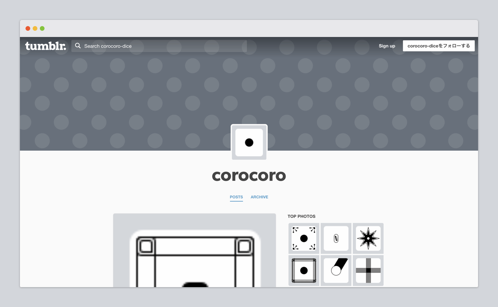
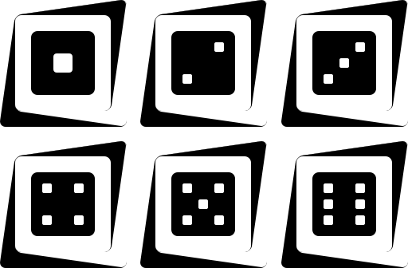
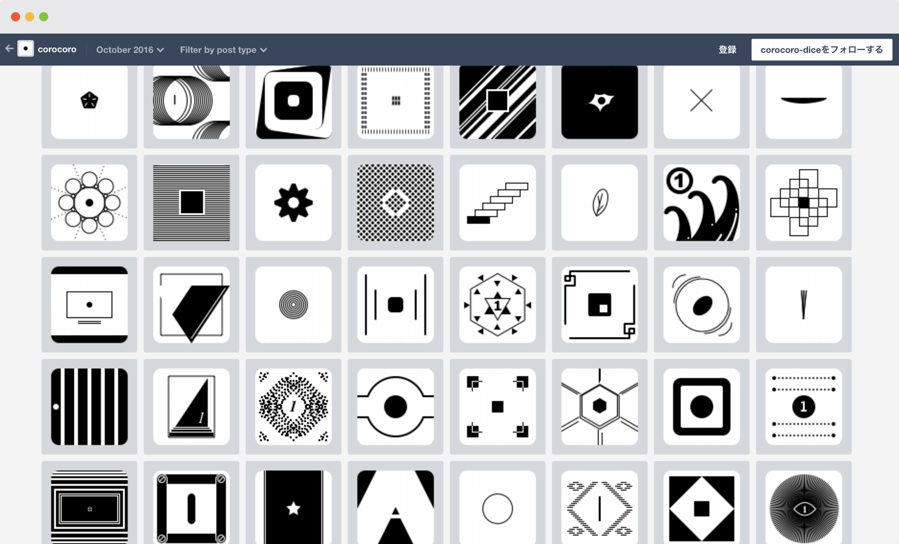

corocoro diceはサイコロのデザインアイデア集です。全部で108のアイデアを考えました。
デザインの幅を広げることを目的にしたこのプロジェクトでは、サイコロごとにできるだけ異なるデザインをつくるようにしました。また、継続してつくり続けるために1つのサイコロは必ず15分以内で完成させました。

このプロジェクトでつくったサイコロのデザインはすべてモノクロです。「色」というデザイン要素を排除することで、形状に集中してバリエーションを考えることができました。
その結果、42個目のサイコロのように少し変わったデザインが生まれました。

サイコロの一覧はサイトのアーカイブページから確認できます。たくさん用意したので、1つくらいは「なかなかいいんじゃないの」と言ってもらえるサイコロがあるはず。

ところで、サイコロのデザインを考える際は、まず余白などのバランスが両極端な1の目と6の目を考えて、そのあと残り2〜5の目のデザインを考えます。また、6の目のデザインを先に決めることで、2や4の目が考えやすくもなります。
この方法は途中から取り入れたのですが、取り入れる前と比べてデザインの戻りが減り、製作時間の短縮につながりました。小さなことですが、こういった効率化は普段の制作でも意識していきたいと思いました。